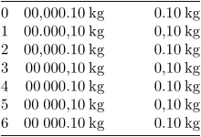

Contents
Summary
Settings
| \setupunit[...,...][...=...,...] | |
| [...,...] | name |
| method | 1 2 3 4 5 6 |
| language | language |
| alternative | text mathematics |
| order | reverse normal |
| separator | small medium big normal none name |
| space | small medium big normal none name |
| style | style command |
| color | color |
| Option | Explanation | ||||||||||||||
|---|---|---|---|---|---|---|---|---|---|---|---|---|---|---|---|
| method |
|
||||||||||||||
| language |
|
||||||||||||||
| order |
|
||||||||||||||
| separator |
|
||||||||||||||
Description
Examples
Example 1
-
\starttabulate[|r|r|r|] \HL \NC 0 \NC \setupunit[method=0]\unit{00,000.10 kilogram} \NC \setupunit[method=0]\unit{@@,@@0.10 kilogram} \NC \NR \NC 1 \NC \setupunit[method=1]\unit{00,000.10 kilogram} \NC \setupunit[method=1]\unit{@@,@@0.10 kilogram} \NC \NR \NC 2 \NC \setupunit[method=2]\unit{00,000.10 kilogram} \NC \setupunit[method=2]\unit{@@,@@0.10 kilogram} \NC \NR \NC 3 \NC \setupunit[method=3]\unit{00,000.10 kilogram} \NC \setupunit[method=3]\unit{@@,@@0.10 kilogram} \NC \NR \NC 4 \NC \setupunit[method=4]\unit{00,000.10 kilogram} \NC \setupunit[method=4]\unit{@@,@@0.10 kilogram} \NC \NR \NC 5 \NC \setupunit[method=5]\unit{00,000.10 kilogram} \NC \setupunit[method=5]\unit{@@,@@0.10 kilogram} \NC \NR \NC 6 \NC \setupunit[method=6]\unit{00,000.10 kilogram} \NC \setupunit[method=6]\unit{@@,@@0.10 kilogram} \NC \NR \HL \stoptabulate
- 